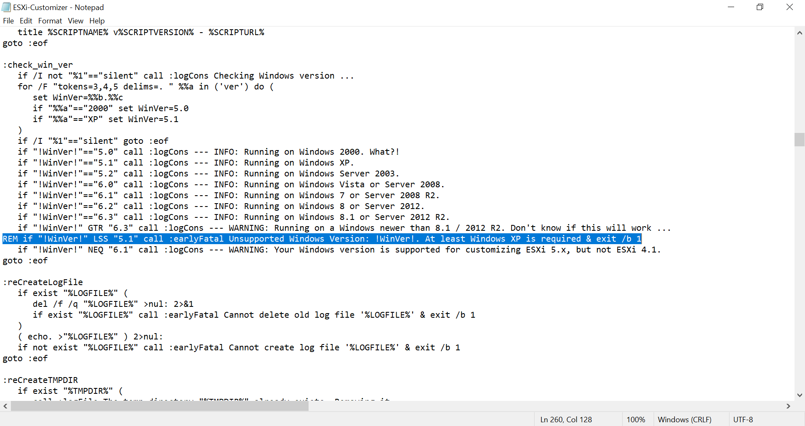
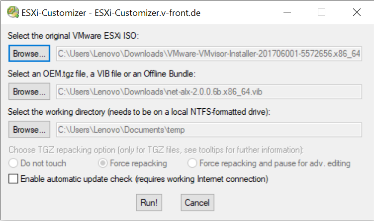

How to set up ESXi on a machine with an incompatible NIC?
If you are reading this blog, it’s likely you ran into the “No Network Adaptor” error whilst installing ESXi.
I recently set up ESXi on an old Asus Laptop and ran into the same error. After tirelessly searching the internet, I managed to piece together a solution that worked for me.
This blog will show you how to install ESXi on a laptop with an incompatible NIC. It should be noted that this is purely for learning purposes, and you should not be installing ESXi where your hardware may be incompatible.
Step 0
Backup your Device
If you have anything important on your computer, make sure you backup this up first.
When you install ESXi, it will wipe out everything on the hard drive, so you will lose anything that you haven’t saved.
Step 1
Determine your laptop’s NIC
You can find this information by using Device Manager on a Windows machine.
Make a note of the NIC, as you will need this to find the appropriate ESXi driver.
Step 2
Download compatible driver
Once you’ve determined the NIC, you’ll have to find a compatible driver for it.
The first place to check for a compatible driver is here. This website has a list of currently available drivers for a variety of NICs.
If you don’t find it there, have a search online, and you could get lucky. I had to do this in my case as I couldn’t find a compatible driver from the link above.
However, I did manage to find the driver I needed for an Atheros NIC at https://www.gomeisa.net/2019/07/atheros-ar8151ar8161-realtek-r8168r8169.html?m=1.
Unfortunately, if you still can’t find a driver after this, you don’t have many options remaining. You either have to build your own driver or consider changing the physical NIC of your machine.
If you have found a driver, however, proceed with the remaining steps. Otherwise, the following won’t work for you.
Step 3
Download ESXi 5.x/6.x
At the time of writing, there are currently limited/no NIC drivers for ESXi 7. Due to this, you will likely have to download an older version of ESXi.
You can find ESXi downloads by searching on Google. I used ESXi 6.0; this link can be found here - https://customerconnect.vmware.com/downloads/details?productId=491&rPId=9954&downloadGroup=ESXI600.
The ESXi version you choose to install is up to you; however, remember to download a version compatible with the NIC driver you found. The location where you found the driver should give you an indicator of the ESXi version you need.
Step 4
Download and Edit ESXi-Customizer Tool
You can find the ESXi-Customizer GUI Tool on - https://www.v-front.de/p/esxi-customizer.html.
If you’re using this tool on Windows 10, you have to comment out line 260. You can do this by adding a “REM” in front of that line.
To quickly find this line, use CTRL + F, and search for “Unsupported Windows Version”.

Figure 1: Comment out the highlighted line to enable Windows 10 compatability.
Step 5
Create custom ESXi Image
Using the tool, add the ESXi image, the driver you previously downloaded and select a location for the newly created image to be added to.
The resulting file will contain an ESXi ISO image with the custom driver added.

Figure 2: Add the ESXi image and custom NIC driver to create a custom image.
Step 6
Create bootable ESXi USB
You can do this using tools like Rufus. You’ll need to use a USB with enough capacity and doesn’t contain any data you might need.
Here is the tutorial I used, but you can find many similar ones through a simple search:
https://www.virten.net/2014/12/howto-create-a-bootable-esxi-installer-usb-flash-drive/
Step 7
Install ESXi on your machine
Insert the USB into your laptop and proceed with the installation following the on-screen prompts.
That’s It!
Once your installation is complete, check that it is working by visiting the IP address shown on a web browser.
If a login screen greets you, then your ESXi installation has been successful. The username and password will be the same ones you set during installation.